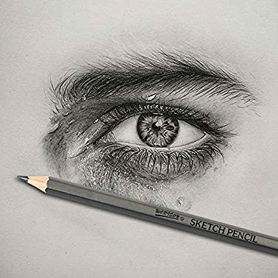

Portrait Drawing

About Portrait
A portrait painting or drawing depicts the image of a particular person or animal, or group thereof.Portraits are effective and compelling when they tell us something about the person. A good portrait is not just a visual representation of a person; it will also reveal something about the essence of the person.
What is Portrait Artist?
A portrait artist captures the intimate likeness of a person on paper, canvas, or another surface, as a sculpture, photograph, painting, or another medium altogether.
How to draw a portrait
- Human
- Animal
- Things
Tools for Portrait Drawing
A good sharpener can save your drawing’s life. Whether you need a very sharp tip to add small details or you want to expose more of the lead to be able to shade properly, you will need a sharpener.
| Pencil | Paper | Pictures |
|---|---|---|
| pen 0.4 | White | Human |
| pen 0.8 | Color | Animal |